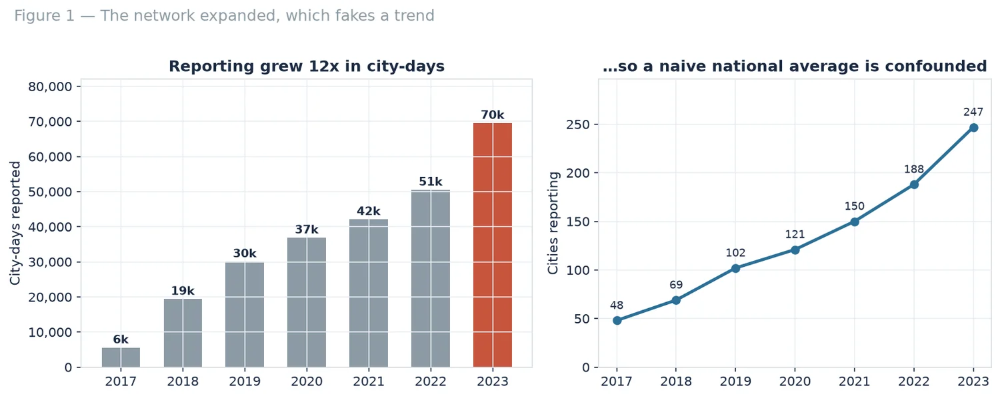
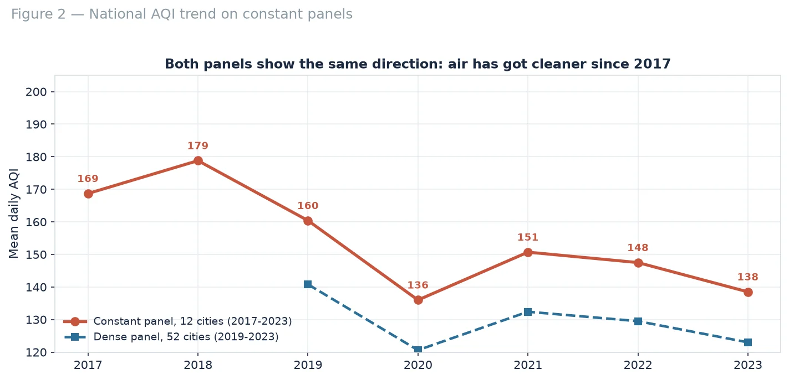
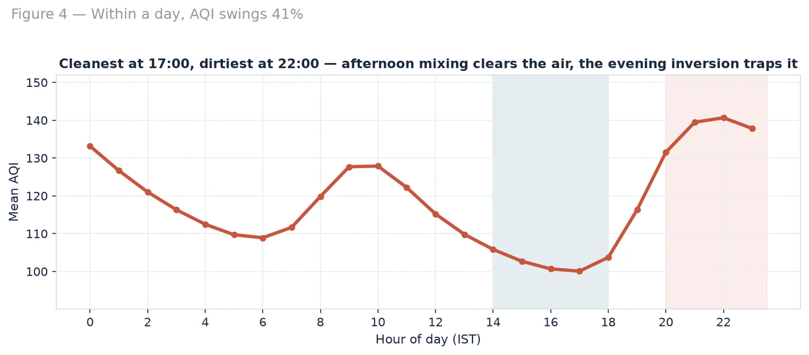

Time series & forecasting · 2017–2023
Seven years of Indian air, on a like-for-like panel
The monitoring network grew twelve-fold between 2017 and 2023, so a national average over all available rows measures coverage rather than air. Rebuilt on a constant panel, mean AQI fell 17.9% — while the seasonal cycle moves 2.6× more than that.
The question
Has Indian air actually improved?
India publishes more air-quality data than almost any country and reads very little of it carefully. Two failure modes are common: quoting a national average across a network that is growing, and treating a seasonal spike as a trend. The question was whether air quality improved between 2017 and 2023 — and how much of any apparent change is real.
The trap
The network grew twelve-fold, which fakes a trend
City-days reported rise from 5,575 in 2017 to 69,533 in 2023 as the network expanded from 48 cities to 247. Any average over all available rows mixes real change with who happened to be measuring. Every trend in the study therefore uses a constant panel: cities reporting at least 180 days in every year. A second, denser panel of 52 cities over 2019–2023 is used as a robustness check, and agrees on the direction.

What the data showed
Air quality improved, modestly
On 12 cities with data in all seven years, mean AQI fell from 169 to 138 — down 17.9%. Nine of the twelve improved.
Season dwarfs trend
November runs 177 against July's 69 — a 2.56× swing inside one year, against an 17.9% movement across seven.
The daily cycle is physics, not traffic
AQI bottoms out at 17:00 and peaks at 22:00, a 41% swing. Afternoon mixing disperses pollutants; the evening inversion traps them.
Forecasting barely beats persistence
A ridge model improves on "tomorrow = today" by 8.8% MAE. Gradient boosting adds nothing — the ceiling is missing information, not capacity.


A November-to-November comparison is the only one that separates policy from meteorology.
Where it stops
AQI is an index, not a measurement
AQI reports the worst sub-index across pollutants, so it hides which pollutant drove a given day — and this dataset carries no pollutant breakdown. One number per city per day erases the intra-urban variation that determines personal exposure. Station siting changes produce step changes that look exactly like trends. And with no meteorology in the model, the forecast ceiling stays low.